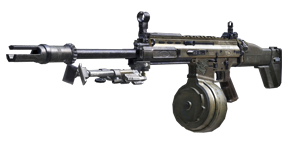
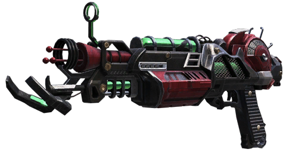

Call Of Duty Black Ops 2
Como número 3, tenemos a la ametralladora ligera RPD, excelente arma, a destacar su gran capacidad de munción(100 balas) y su elevado daño y cadencia.

Como número 2, tenemos a la ametralladora ligera HAMR, excelente arma, a destacar su gran capacidad de munción(125 balas) y su bastante elevado daño con poco retroceso.

Como número 1, tenemos a la RayGun MK2, versión mejorada de la Raygun original, capaz de abatir de un disparo a cualquier zombie hasta rondas elevadas, con 40 rondas de capacidad de munción y disparo de ráfagas de 3, con una recarga muy rápida.